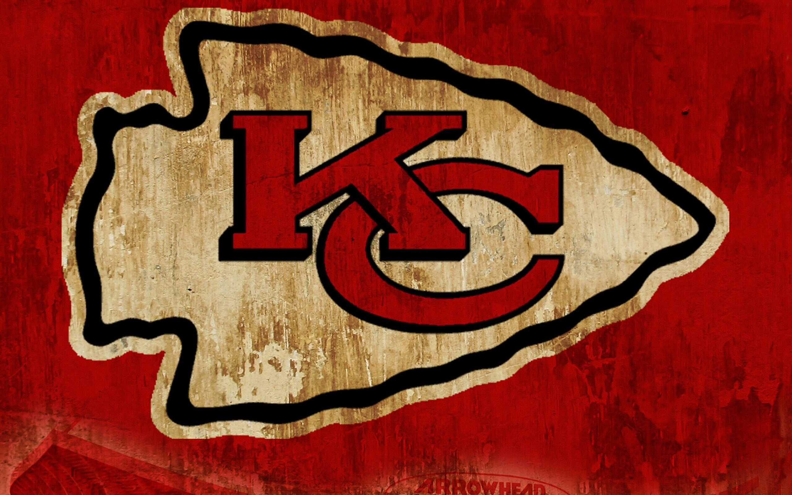
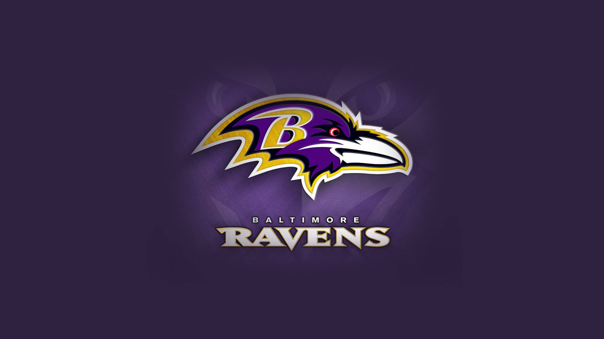
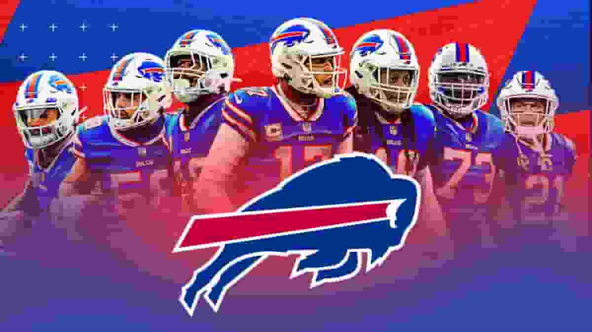
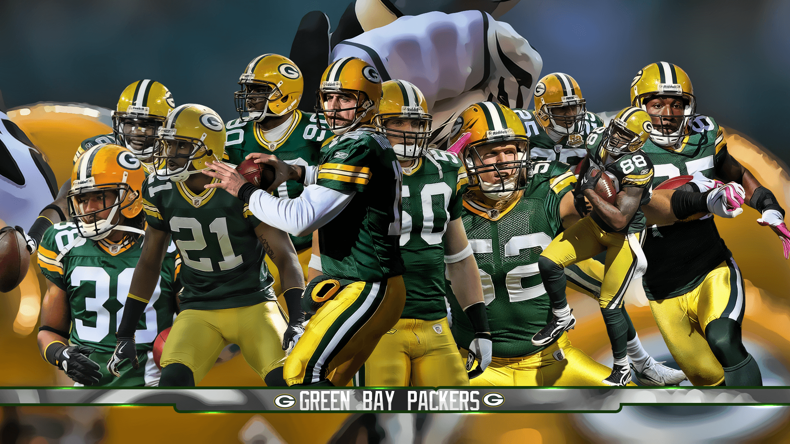
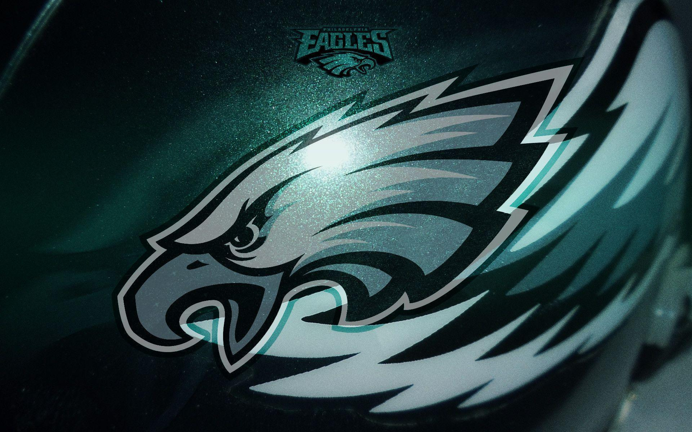

Os melhores times da NFL

Fundado em 1960 como Dallas Texans, os Chiefs mudaram-se para Kansas City em 1963 e se tornaram a segunda equipe da AFL a derrotar uma equipe da NFL no Super Bowl IV. Desde então, eles têm sido uma força dominante na liga, vencendo três Super Bowls entre 1970 e 2024.

Os Ravens, que mudaram-se de Cleveland, têm uma origem literária interessante, com o nome escolhido em homenagem ao famoso poema "The Raven" de Edgar Allan Poe. Eles têm uma conexão cultural significativa com a cidade de Baltimore.

O Buffalo Bills é uma das franquias mais antigas da NFL, fundada em 1959 e se juntando à liga em 1970. A equipe teve sua primeira temporada em 1960 e rapidamente se destacou como uma força no futebol americano. Os Bills conquistaram dois campeonatos da AFL em 1964 e 1965, mas nunca venceram um Super Bowl, apesar de terem chegado a quatro Super Bowls consecutivos entre 1991 e 1994. A equipe é conhecida por sua torcida leal, a "Bills Mafia", e por sua legião de fãs fiéis.

Os Packers, originários de Green Bay, são uma franquia histórica da NFL, com uma longa história de vitórias e derrotas. Eles têm uma conexão cultural profunda com a cidade de Green Bay e sua comunidade

Os Eagles são uma franquia da NFL com uma história rica de vitórias e derrotas, incluindo uma participação em quatro Super Bowls. Eles são conhecidos por sua força